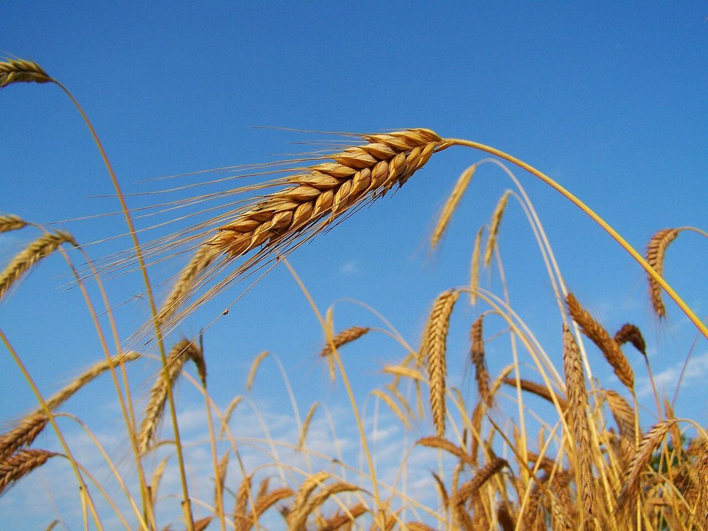

ほしのほほえみ
パン屋 / 岩手県一関市
岩手県一関市にあるパン屋「ほしのほほえみ」のご案内ページです。営業時間やメニューなど、詳しいことは準備中。まずはInstagramをのぞいてみてください。

制作側の連想
店名の「ほ」は、三つある。
ほしのほほえみ
「ほしのほほえみ」には「ほ」が3つ入っています。制作側は、同じ音の「穂」「火」「頬(ほほ)」を重ねて、パンができるまでの三つの場面に見立ててみました。店名の由来は分かりません。お店の理念や由来とは無関係な、制作側の連想です。
ひとつめの「ほ」
穂 ― 麦の背たけ
空へ向かって伸びる麦の穂を、ひとつめの「ほ」に見立てました。以下の写真はイメージです。


ふたつめの「ほ」
火 ― 窯のあかり
窯の中の炎をふたつめの「ほ」に見立てました。写真はイメージで、お店の設備を示すものではありません。


みっつめの「ほ」
頬 ― まるいふくらみ
丸くふくらんだ形を、頬(ほほ)に重ねました。写真はイメージで、お店の商品ではありません。


ご案内
お店のこと(確認できたものだけ)
| 所在地 | 〒029-3401 岩手県一関市藤沢町増沢上久手51-1 |
|---|---|
| 電話 | 0191-34-9778 |
| 営業時間 | 準備中 |
| 定休日 | 準備中 |
| ご予約 | 準備中 |
| 駐車場 | 準備中 |
| SNS | Instagram @hoshinohohoemi |